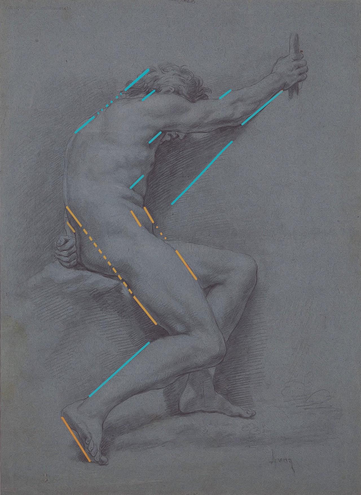
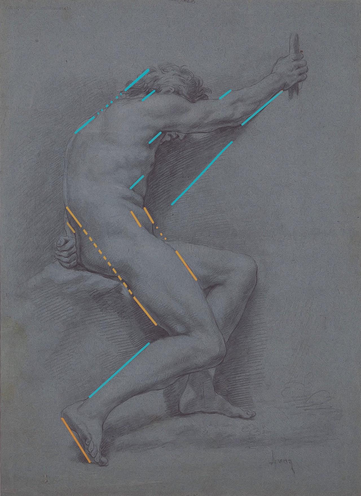
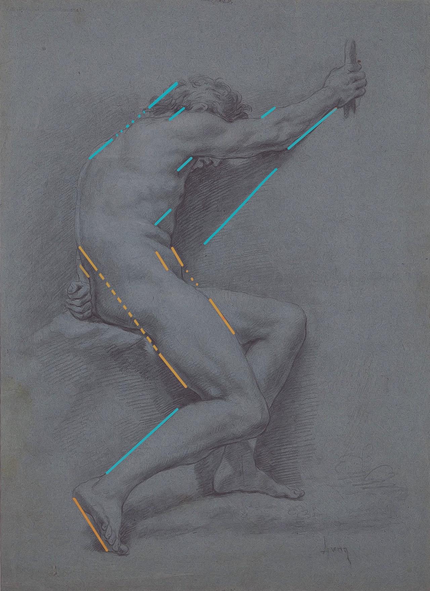
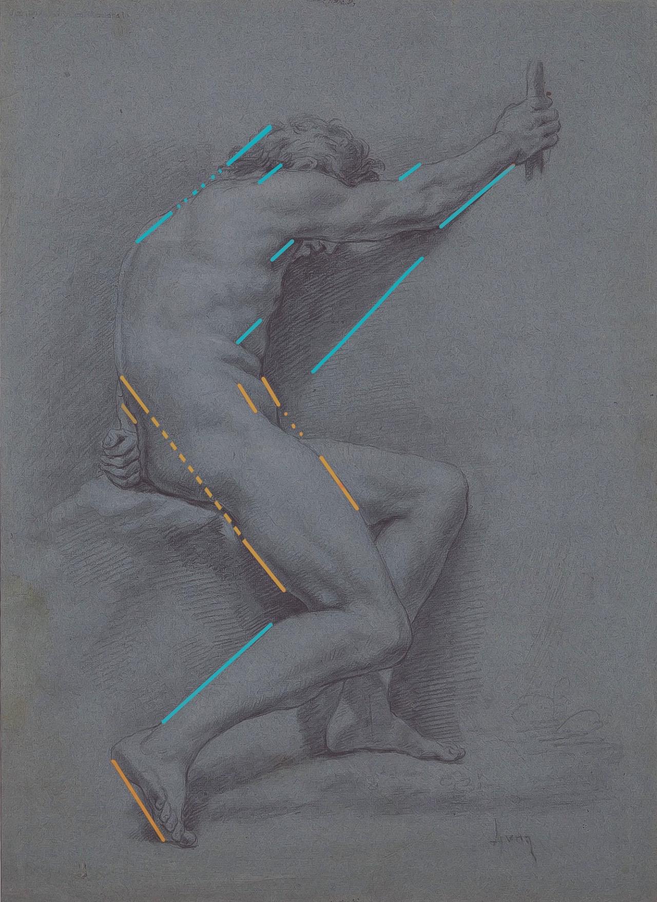

Rytmer er til for å finne de essensielle markeringene i en tegning. Det er fort gjort å miste oversikten over helheten, og rytmer er til for å bevare det helhetslige overblikket.
Parallelle linjer kan hjelpe til med å etablere god rytmikk igjennom tegningen.